Osny 2010

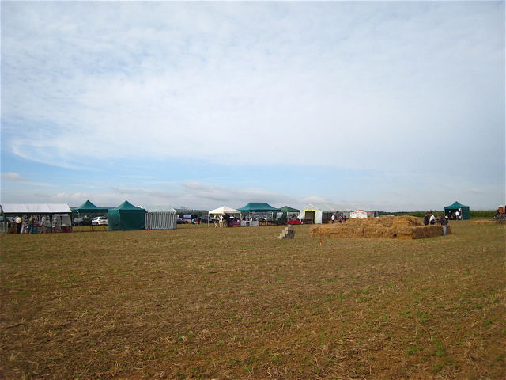
Osny (prononcer Ony) est dans le Val d'Oise, à 40 km de Paris et... 9 de chez moi. La rencontre, à l'occasion de la Saint-Fiacre a lieu sur le hameau (village maintenant...) d'Immarmont. C'est en fait une kermesse comportant de nombreuses animations, dont... le cerf-volant !
La fête est dans un vaste champ de 300 m de côté dont une petite partie est occupée par des stands divers. Le reste est une surface démesurée, un terrain rêvé pour les cerfs-volants, et sur le plateau bien venté, surtout aujourd'hui !

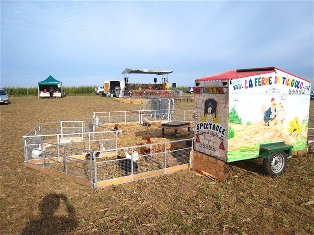
Au centre, un condensé de ferme avec de jeunes animaux pour que les enfants les voient et même les touchent...

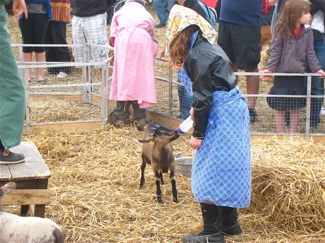
Bien sûr, les animaux vivent, mangent, le chevreau tète son biberon... donné par une vieille fermière de bien 12 ans !

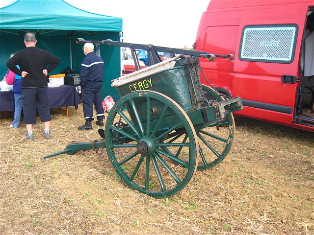
Sont venus aussi les pompiers du Musée des Pompiers de Cergy, avec leur voiture rouge moderne, mais leur pompe à l'ancienne sur sa remorque dédiée !

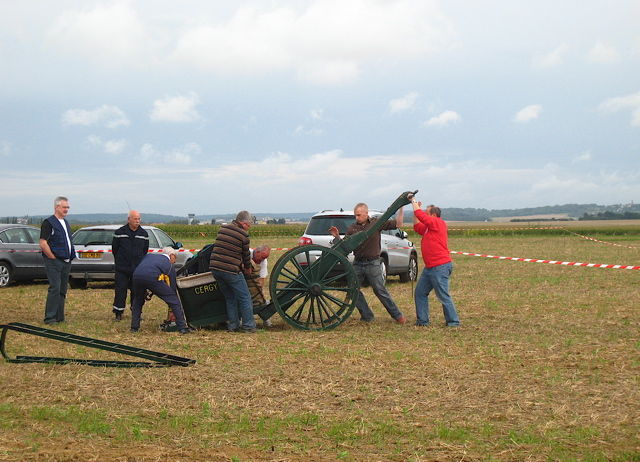
Voilà, ils s'entraînent avant la démo, l'échelle à crochet est décrochée de sous la remorque et le pompe est déposée au sol...

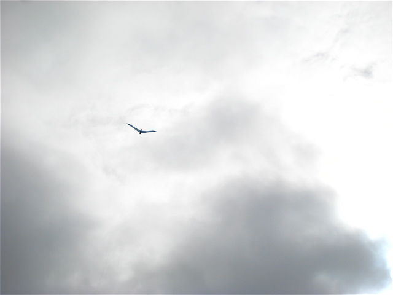
Je suis arrivé tôt, le vent n'est pas trop fort, j'ai mis en l'air mon fidèle Oiseau Bleu, mon premier monofil !

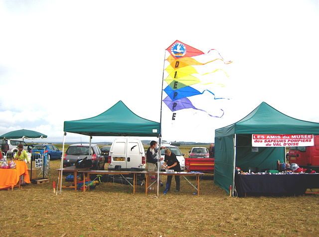
Le Club de Dieppe est arrivé, à 6, nous serons les seuls cervolistes !

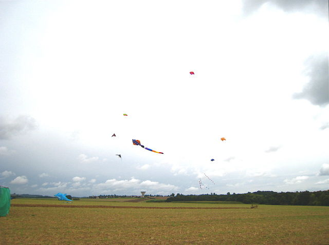
Mais Pierre, de Dieppe, a de nombreuses structures, des flow-forms colorés, une raie Manta, un poisson bleu et on meublera un peu quand même, dans le vent qui forcit régulièrement !

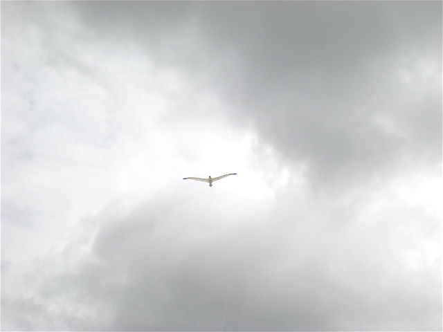
Le vent étant monté, je rentre l'Oiseau Bleu et je sors mon Albatros restant, le numéro 2...

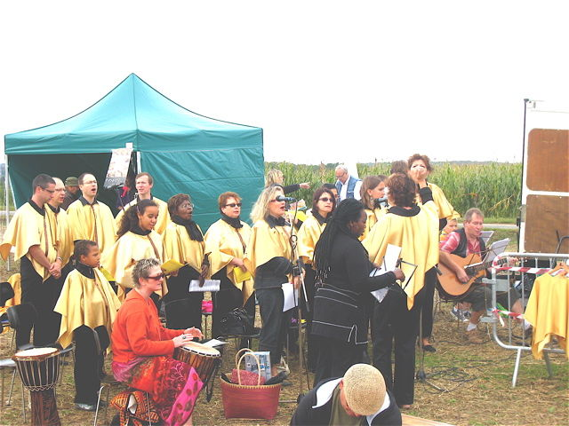
En bas, une chorale Gospel s'échauffe avant la messe !

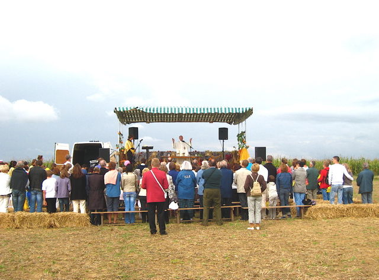
La messe est dite en plein air, n'oublions pas, c'est la Saint Fiacre, patron des Bonnetiers, Chauffeurs de Taxi, Jardiniers, Maraîchers, Potiers d'étain, Tuiliers !

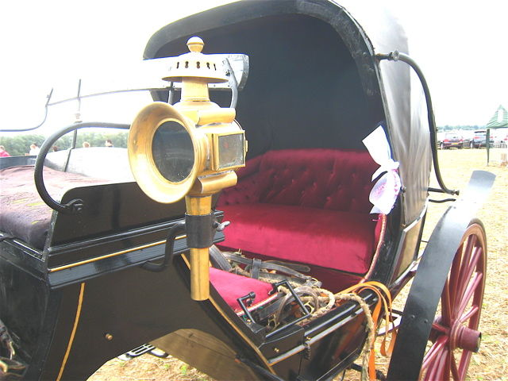
Les Attelages d'Immarmont sont de la partie, avec leurs chevaux de trait breton et leurs calèches ! Celle-ci est luxueuse avec ses lanternes de laiton poli et ses coussins de velours

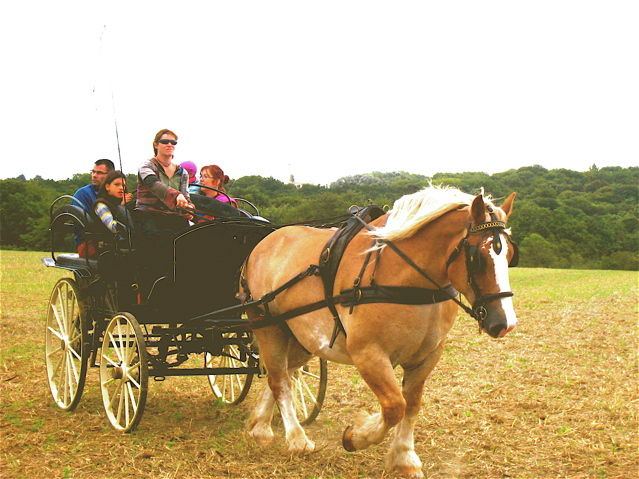
Ils promènent aussi les visiteurs dans ce char à banc attelé d'un seul cheval, la calèche en ayant deux...

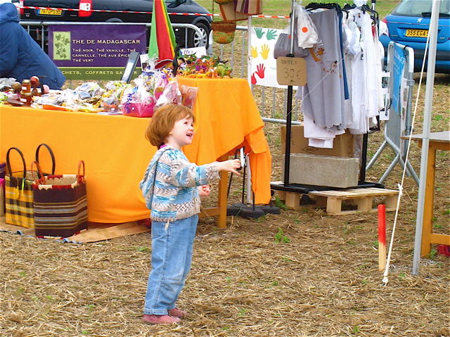
Le Club de Dieppe fabrique aussi (gratuitement) des cerfs-volants Eddies (de Nasser) pour les enfants ! Celle-ci a l'air très heureuse de son nouveau jouet !

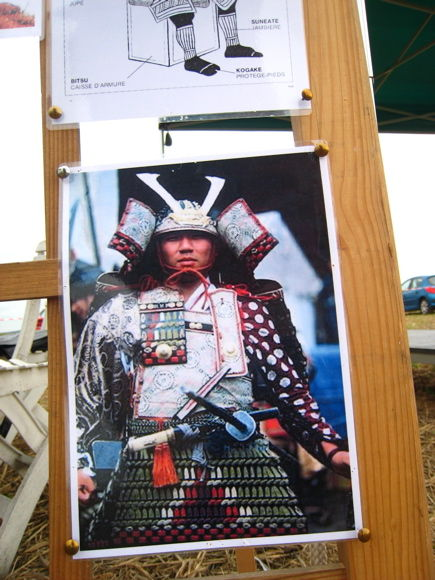
Est venu aussi un club de Kendo, le sabre japonais. Ils feront quelques katas et démonstrations sur scènes, avec les différentes armes : sabre, sabre d'exercice, sabre court, 2 sabres, sabre et bouclier, etc.

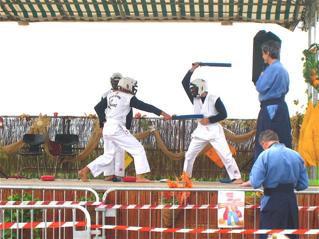
Sur scène, démonstration au sabre court d'exercice. Les boucliers sont par terre, en rouge ! Malgré les armes en mousse, les concurrents ont un casque, ça autorise à frapper fort !

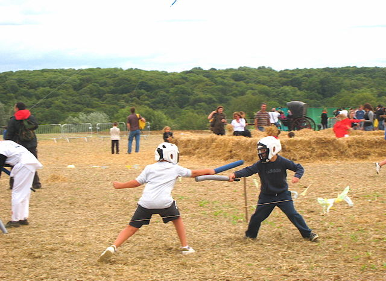
Et puis, combats libres au sol pour les gamins qui veulent, au sabre court, dans une aire délimitée !

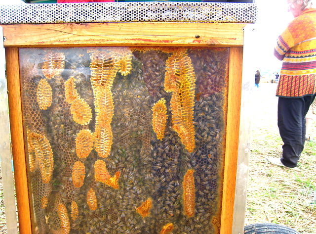
Et même une ruche, fermée heureusement ! C'est une ruche libre, naturelle, sans rayons bien parallèles, les abeilles ont fait ce qu'elles voulaient !

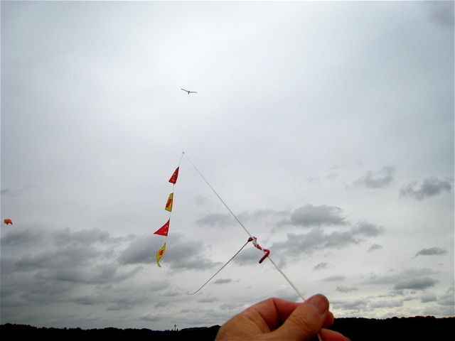
Le vent monte de plus en plus, l'Albatros tire dur ! J'ai monté sur la ligne mes nouveaux fanions, ils sont moins rigides que les précédents, ralingués. Les crochets sont, comme sur ma nacelle, des fils électriques autour desquels j'enroule la ligne !

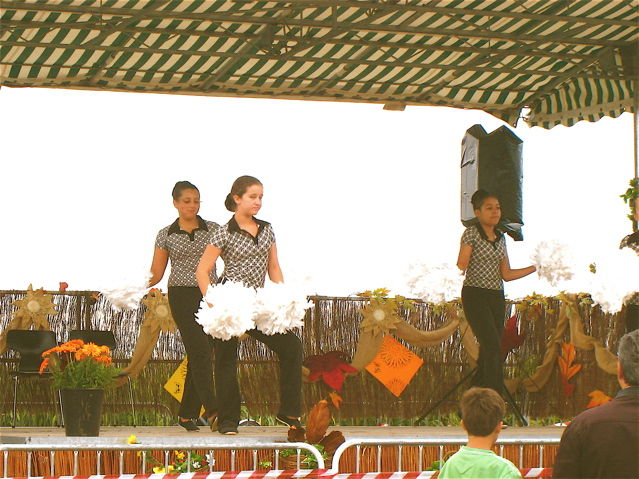
Sur la scène, des Pom-Pom girls, plus que décentes, dansent en cadence... On sourit, mesdemoiselles !

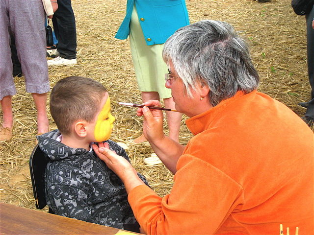
Il y a aussi, bien sûr, une maquilleuse d'enfants ! Un futur tigre est en train de naître !

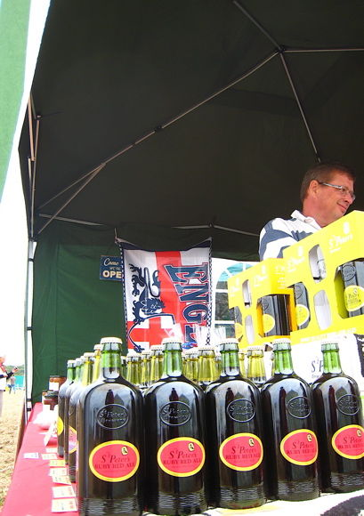
Un Anglais a apporté de sa Brasserie St-Peters des bières de son cru, St-Peters Ruby Ale... Effectivement, elle est rose rubis, pâle, doit y avoir de la cerise, là-dedans !

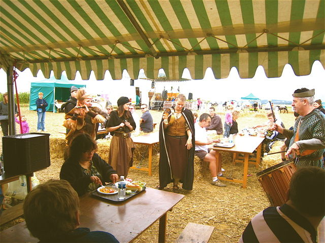
Une bande de bateleurs offre un spectacle de rue, sur des agrès montés dans leur espace, ou en itinérant sur toute la surface !

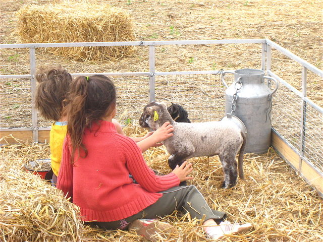
La ferme fait son plein d'enfants (pas trop à la fois quand même) ! Les bébés animaux ont un grand succès et ne sont pas farouches, avec l'habitude !

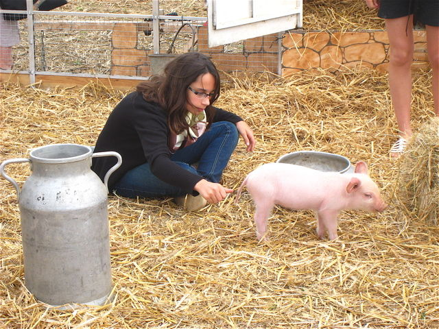
Le porcelet est moins coopératif, mais n'a pas vraiment peur quand même...

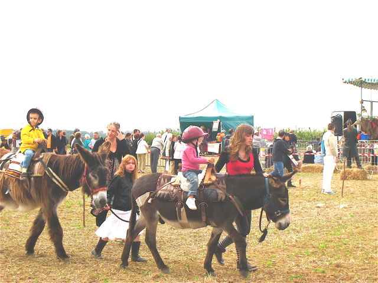
Les enfants apprécient aussi les ânes et les mulets qui les promènent calmement !) !

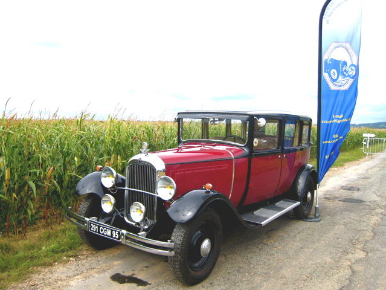
Il y a même UNE voiture ancienne, du ccaprv, le Club du Chevron et Anciennes du Parc Régional du Vexin ! C'est une puissante Citroën C Six, vaste berline familiale... On en a même fait des versions longues carrossées en petits autocars !

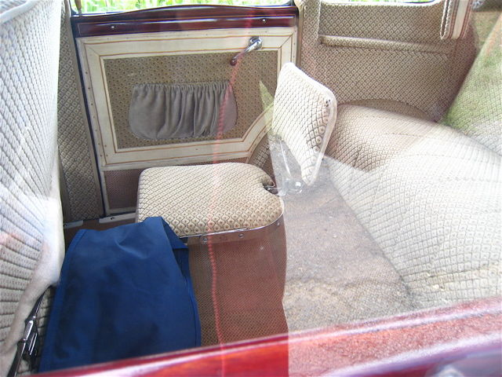
L'intérieur a 3 rangées de sièges, comme les voitures modernes qui découvrent les bienfaits de cette disposition. La rangée du milieu est composée de strapontins repliables dans le plancher, ce qui crée un vrai salon à l'arrière !

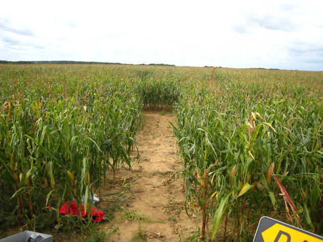
De l'autre côté de la route, un labyrinthe dans le maïs, au profit d'une association de handicapés !

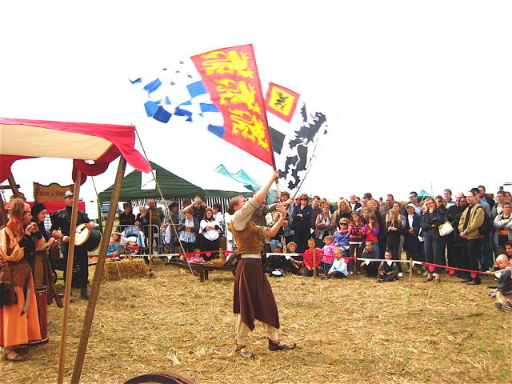
Les baladins lancent leur show, plein de bagout, de pantomimes, d'acrobaties et d'épreuves de force !

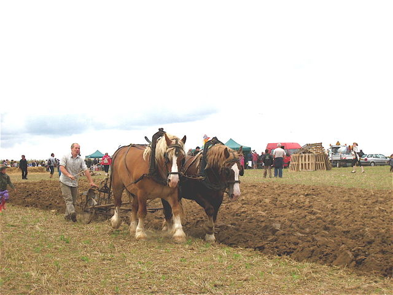
Les Attelages d'Immarmont font aussi une démonstration de labourage, hippotracté par Hirondelle et Le Roi...

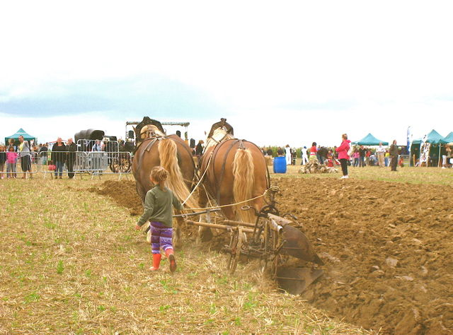
Ca ne demande pas une grande force physique comme vous pouvez voir, sauf au bout pour retourner la charrue et inverser le sens du versage !

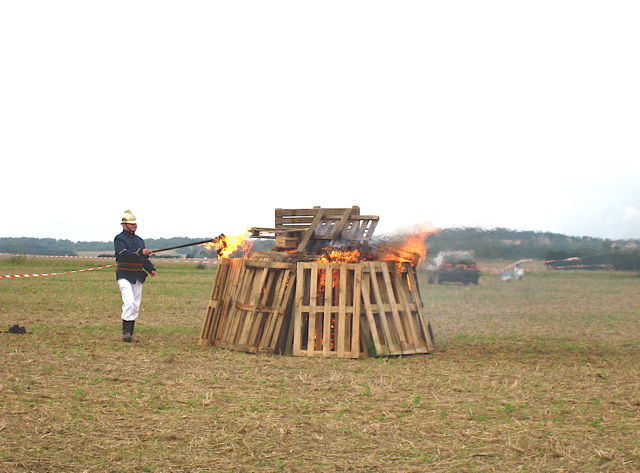
Mon Dieu, un pompier pyromane ! Il met le feu à un tas de paille et de palettes !

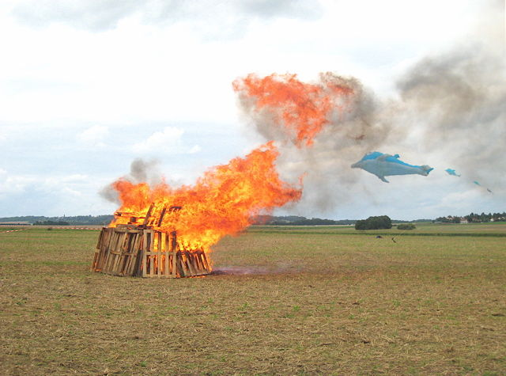
Avec le vent, pour brûler, ça brûle !

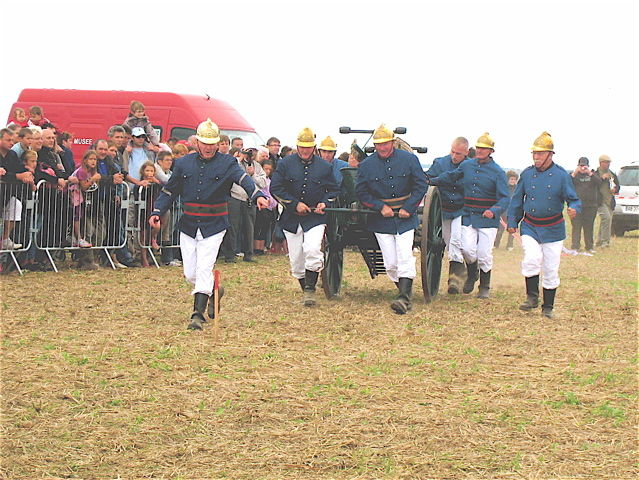
Heureusement, les pompiers accourent... en grande pompe, en uniforme et à toutes jambes... avec leur petite pompe à bras !

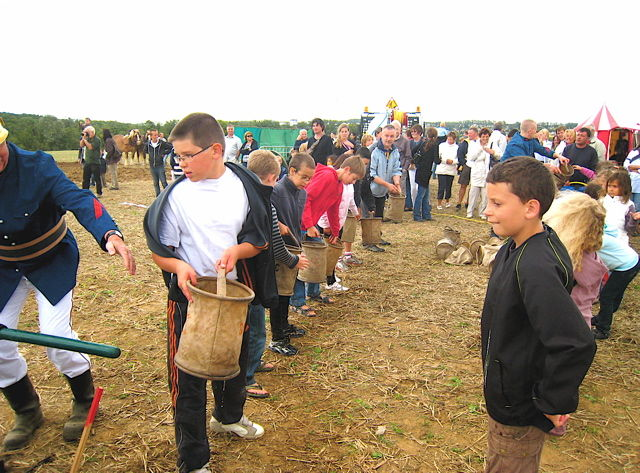
Après un petit plein initial au camion, les enfants se relaient pour faire une chaîne de seaux ! Je n'avais jamais pensé avant cela qu'il faut en fait 2 chaînes, l'autre servant à ramener les seaux !

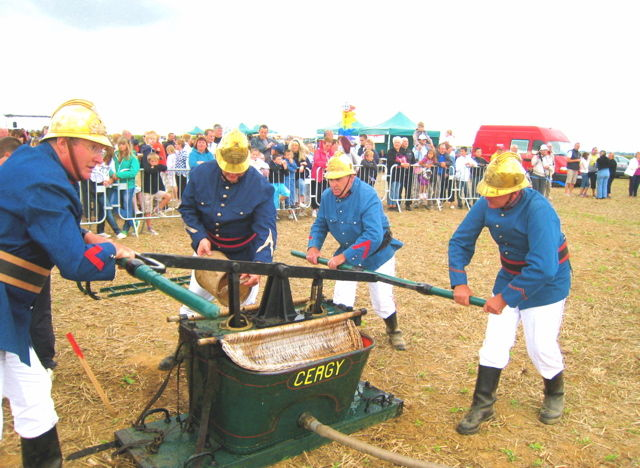
Ca y est, la pompe fonctionne à plein rendement, actionnée par 4 hommes... Les paniers sont en fait des filtres pour arrêter les impuretés quand on puise dans une mare, par exemple les poissons...

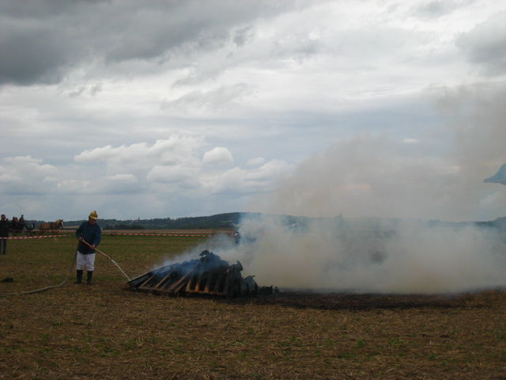
Le plus difficile a été d'éteindre le champ ou la paille restante commençait à brûler ! Le brasier lui-même a été éteint en 15 secondes !

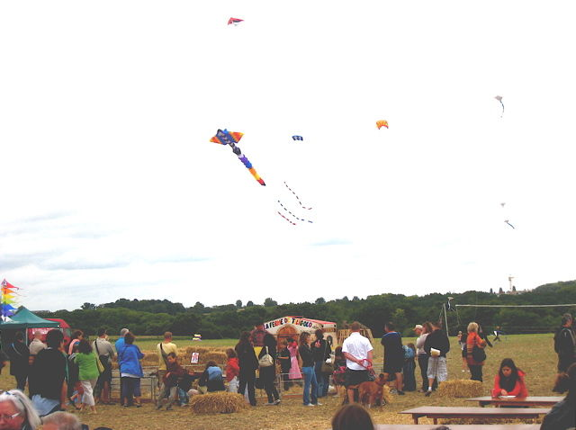
Bon, il n'y a pas eu énormément de cerfs-volants, et je ne vais vous les montrer dix fois. Et vers le soir, ça a soufflé tellement fort qu'il y a eu un peu de casse... Pierre a eu un PowerSled perso coupé, il est parti dans la forêt en face, impénétrable. J'ai cassé mon Albatros, j'ai pu réparer, mais j'ai fini avec le Rokkaku. Les pilotables ont cassé des lignes lors de leur ballet de démo ! Mais bon, chacun a bien volé quand même, dans cette ambiance bon enfant...
Osny 2010 : Une fête-kermesse pleine d'attractions diverses (soit une organisation énorme et bien conduite), beaucoup de place et pas de pluie ! Et à 9 km de chez moi, je ne pouvais pas rater ça... Finalement, je ne le regrette pas !